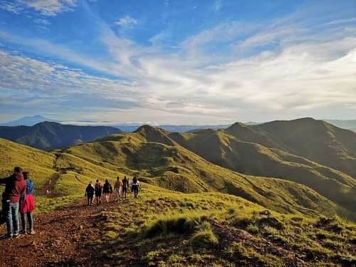
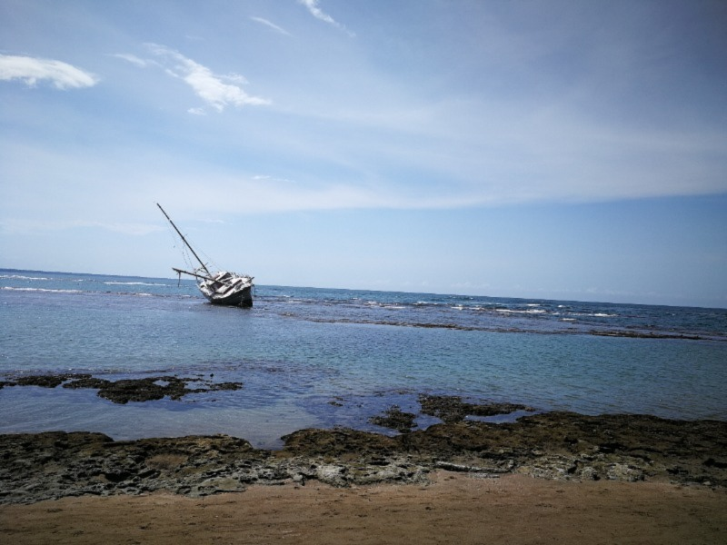

Costa Rica is probably one of the most incredible countries you could ever visit, you would think is a sunny caribbean country with blue beaches surrounding, but, did you know Costa Rica can get -1°C in some places? Probably not.
The country is literally a mountain with beaches around, which makes the country not just a paradise for tourists, but also lots of animals and species.
Have you ever imagined beach and mountain in the same place?

